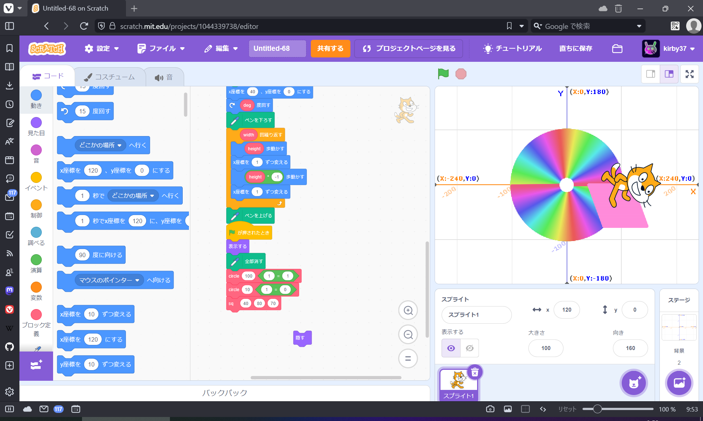
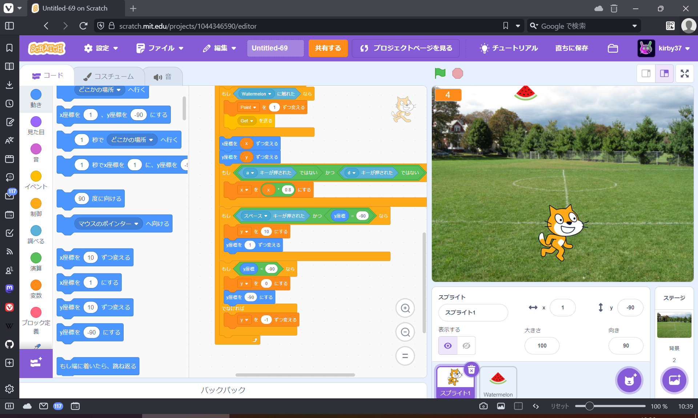

1週目のレポート : 公大高専1年実習I-1
2a班14番 NekoChan9382
第1週目
1-1 サイエンスアート

1.内容
スクラッチを使って線を書くプログラムを作った。
猫を動かす基礎を学び、猫の軌跡をペンが記録する性質を利用して線や図形を描いた。
2.感想
今回は円を2つ描いてCDを連想させる図形と、平行四辺形を描くプログラムを作った。
ブロック定義の機能を利用して一瞬で図形を描いたり同じような図形を使い回せるようにした。
1-2 ゲーム

1.内容
ループ、if文、変数の基礎をゲームプログラムを通じて学んだ。
キーボード入力やオブジェクトと触れたかをifを使って検知し、それを繰り返すためにループを使った。
スイカがランダムな位置に落ち、それを猫が拾うゲームを作った。
また、拾った個数を変数で管理した。
2.感想
かんそうかんそう
1-3 ホームページ作成
私のホームページ
1.内容
GitHubからウェブの雛形を取り込み、それを編集することでホームページを作成した。
2.感想
Forkを使うことで元リポジトリとは分岐した状態でリポジトリをクローンすることができると知った。
htmlを書いた経験がほぼ無かったのでこのようなとっつきやすい方法で基礎を知ることが出来た。これも最初から自分で全て書けるようになりたい。
各ページへのリンク
1週目のレポート
2週目のレポート
3週目のレポート
私のホームページ